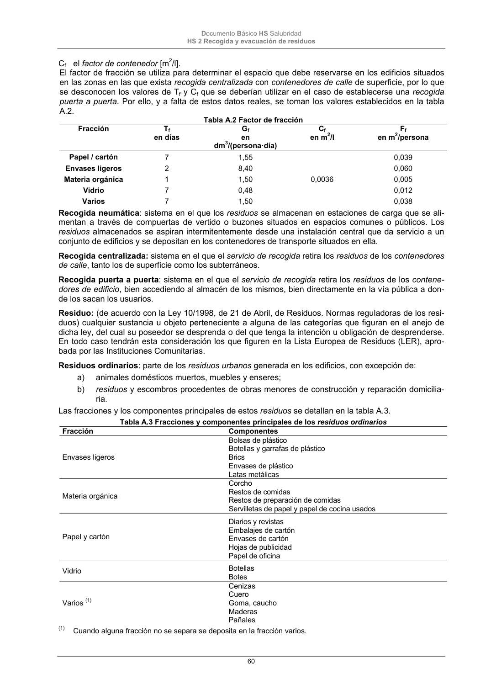

DB-HS Salubridad · edición 2022-06-14 · capa oficial
Documento DB-HS-oficial · SHA-256 del PDF 68df3caacc95f71aee2ec1ba7b2c65ae66155c21e3a8785521b8fdd4fd640d3b
Página física 60 de 184.
Copia fiel del PDF fuente · Fuente oficial
Ficha de la disposición en la fuente oficial
Formato: Texto de la página (Markdown)
Documento Básico HS Salubridad HS 2 Recogida y evacuación de residuos 60 Cf el factor de contenedor [m2/l]. El factor de fracción se utiliza para determinar el espacio que debe reservarse en los edificios situados en las zonas en las que exista recogida centralizada con contenedores de calle de superficie, por lo que se desconocen los valores de Tf y Cf que se deberían utilizar en el caso de establecerse una recogida puerta a puerta. Por ello, y a falta de estos datos reales, se toman los valores establecidos en la tabla A.2. Tabla A.2 Factor de fracción Fracción Tf en días Gf en dm3/(persona·día) Cf en m2/l Ff en m2/persona Papel / cartón Envases ligeros Materia orgánica Vidrio Varios 7 2 1 7 7 1,55 8,40 1,50 0,48 1,50 0,0036 0,039 0,060 0,005 0,012 0,038 Recogida neumática: sistema en el que los residuos se almacenan en estaciones de carga que se ali- mentan a través de compuertas de vertido o buzones situados en espacios comunes o públicos. Los residuos almacenados se aspiran intermitentemente desde una instalación central que da servicio a un conjunto de edificios y se depositan en los contenedores de transporte situados en ella. Recogida centralizada: sistema en el que el servicio de recogida retira los residuos de los contenedores de calle, tanto los de superficie como los subterráneos. Recogida puerta a puerta: sistema en el que el servicio de recogida retira los residuos de los contene- dores de edificio, bien accediendo al almacén de los mismos, bien directamente en la vía pública a don- de los sacan los usuarios. Residuo: (de acuerdo con la Ley 10/1998, de 21 de Abril, de Residuos. Normas reguladoras de los resi- duos) cualquier sustancia u objeto perteneciente a alguna de las categorías que figuran en el anejo de dicha ley, del cual su poseedor se desprenda o del que tenga la intención u obligación de desprenderse. En todo caso tendrán esta consideración los que figuren en la Lista Europea de Residuos (LER), apro- bada por las Instituciones Comunitarias. Residuos ordinarios: parte de los residuos urbanos generada en los edificios, con excepción de: a) animales domésticos muertos, muebles y enseres; b) residuos y escombros procedentes de obras menores de construcción y reparación domicilia- ria. Las fracciones y los componentes principales de estos residuos se detallan en la tabla A.3. Tabla A.3 Fracciones y componentes principales de los residuos ordinarios Fracción Componentes Envases ligeros Bolsas de plástico Botellas y garrafas de plástico Brics Envases de plástico Latas metálicas Materia orgánica Corcho Restos de comidas Restos de preparación de comidas Servilletas de papel y papel de cocina usados Papel y cartón Diarios y revistas Embalajes de cartón Envases de cartón Hojas de publicidad Papel de oficina Vidrio Botellas Botes Varios (1) Cenizas Cuero Goma, caucho Maderas Pañales (1) Cuando alguna fracción no se separa se deposita en la fracción varios.
